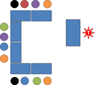
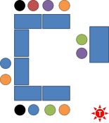
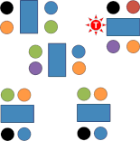

What to avoid in the classroom (especially on a Delta course)

Nobody (whatever their
claims to pedagogic omniscience) has a monopoly on 'the right way' to
teach English or any other language.
However, although there may be lots of the right ways to do things,
there are almost infinitely more ways for things to go wrong.
This guide is not linked explicitly to the teaching criteria and
how to meet them (for that,
start at
the index page for that set of guides).
This guide is concerned with some of
the behaviours which underlie the ability to achieve
the
teaching criteria.
The following is drawn from comments made by tutors and assessors concerning the most irritating and dysfunctional classroom behaviours that it is well worth avoiding if only for the sake of the assessor's and the learners' sanity.
 |
Relying on the strongest or most voluble learners |
All groups of learners contain people with various degrees of
willingness to contribute. While the most voluble learners can
be of benefit to a lesson because they mean that the lesson's pace
and dynamic is maintained, avoiding silences which may embarrass, we
need to make sure that everyone has an equal chance to speak, ask
questions and make contributions.
It is also true that all groups of learners contain stronger
students and weaker students. No group can ever be entirely
homogenous in terms of ability in any one skill or in
terms of their strengths across various skills.
If you rely on the loudest, the most forthcoming or the
strongest learners in much of the lesson, you will be criticised for
one of the following:
- not teaching with sensitivity to the learners’ needs
- not providing equal opportunities for participation
- not engaging and involving all the learners
How to avoid the problem |
- Know your learners. Make a list of all the learners by name and score them in terms of strengths across all four skills and language and in terms of their willingness to contribute.
- Make sure you know who the most outspoken members of the class are and have a plan to deal with them gently while allowing them to contribute usefully.
- Make sure you direct the most difficult prompts to the strongest and the easiest questions to the weakest.
- Nominate learners by name.
- Use more wait time. Ask a question or invite a contribution but make sure you wait in silence for 15 seconds or so before nominating who is to answer. That way, everybody has the time to consider a response before they are asked to contribute. Do not let people shout out an answer except by invitation.
- Differentiate. Make sure that you have follow-up tasks for the strong learners who finish quickly so that they are not sitting idly.
- Be demanding. Most classes contain some learners for whom finishing a task quickly is more important than getting everything right. If this describes some of your learners, make sure you have the space to go to them during tasks and ask a bit more of them than just completing a task.
 |
Talking down to your learners |
Nobody likes to be patronised. Avoid foreigner-speak and
pidgin English at all costs.
Some students are elementary learners, but that does not mean they
are elementary thinkers.
It is, in fact, easier to understand properly formed language,
albeit spoken more slowly and simplified in terms of structure and
lexis, than it is to understand non-standard pidgin English.
The same is true of the temptation to use something akin to
carer-speak with over-enthusiastic intonation patterns more suitable
(possibly) to a primary school.
If you talk down or use pidgin English, will be criticised for one of the following:
- not teaching with sensitivity to the learners’ backgrounds
- not using language which is accurate and appropriate for the teaching and learning context
- not adapting your use of language to the level of the group and individuals in the group
- not giving accurate and appropriate models of language form, use and pronunciation
 |
How to avoid the problem |
- Use natural English, including contractions and weak forms, but be careful to keep the lexical content and grammatical structures within your learners' competence. This may well mean scripting your instructions and explanations at the lesson-planning stage for lower-level groups.
- Exploit redundancy. Make your language accessible by
sending multiple signals. If, for example, you have a
class of elementary learners who are unlikely to understand:
When did he go?
because they don't yet understand past-tense questions, rephrase it as:
Did he go yesterday or is he going today?
The words yesterday and today make the tense forms redundant because they signal the time of the action. They are easy to understand and don't require learners to unpack the grammar.
You have, in other words, maintained naturalness and accuracy but still got the meaning across and that is very much better than:
When he go?
which may be comprehensible but is hardly a good model for your learners. - Although you will, at almost all levels, need to simplify your output to some extent, especially for key ideas and instructions, there is no need to overdo this. In context, even language ostensibly beyond the learners' ability may be easily comprehended providing you accompany it with lots of context, demonstration of tasks and some gesturing.
- When demonstration of a task is a viable alternative to explaining it, do that instead of trying to explain something complicated when you have a limited language range at your disposal.
 |
Talking to yourself, mumbling, talking to the board and being unclear |
When you are nervous and stressed (as most teachers are when they are being assessed), there is a natural tendency to talk to yourself and give some kind of commentary on what is going on. For example, people have been observed saying things like:
- Right, now, I need to move on to the practice stage
- I need to give out this worksheet now
- This is the freer practice stage
- I hope everyone's on task. Let's see ...
and so on.
All of this is unnecessary teacher speak and may actually serve to
raise the level of ambiguity in the room because learners will be
tempted to try to understand everything the teacher says, whether it
is relevant or not. You may know that something you have said
is not something the learners need to know but they may well be
asking themselves:
How do I know if I need to know this until I know what
this is?
If you pepper your teacher talk with comments on what's happening and asides to yourself, you will be criticised for:
- not setting up activities appropriately
- not ensuring that the learners remain focused
- not using language which is accurate and appropriate for the teaching and learning context
How to avoid the problem |
- Before opening mouth, engage brain. Think before you speak and ask yourself if what you are going to say is relevant. If it isn't, don't say it.
- Focus yourself on the purposes of teacher talk and make sure
it is confined to one of the following:
- managing the learners and the classroom
- teaching (not necessarily telling) and modelling
- maintaining relationships between the you and the learners and between the learners
- Think C L E A R:
- Clear: not mumbled, spoken facing the board or spoken too quickly.
- Limited: too much teacher talk is often criticised and it is true that the more the teacher talks, the less the students can say. However, the quality of teacher talk is what is really critical.
- Explicit: learners need to be aware of
the teacher's intentions. If a learner is thinking (or
saying):
Is this an instruction, some information or just a chat?
then the teacher talk has not been explicit.
Developing tones to make intention clear is a key skill so that the learners are aware by your tone of voice what your intentions are.
Don't mix intentions in the same utterance. Don't say:
That's really good, isn't it but you need to write it on the board and correct the spelling problem
because that mixes social talk with instruction with teaching and is very confusing. Prefer then:
Good! [Pause for student response] Check the spelling of this word, please. [Pause for student response] Now go and write it on the board, please. - Appropriate: teacher talk should tell learners what they need to know and no more. You may know, e.g., that something is an example of an ungradable adjective but your learners may not want or need to be burdened with this knowledge right now because it has nothing to do with the lesson focus.
- Relevant: this just means maintaining your focus and not using teacher talk to fill silences or go off on tangents.
If you aren't sure whether to say something, don't say it.
 |
Being hesitant, unorganised and generally faffing around |
If you aren't a native British English speaker, you may want to
know that the verb faff around means to engage in
ineffectual and pointless activity before getting on with something.
If you do this in the classroom you will appear disorganised and
unprepared. You need to focus on what you are doing with the
absolute minimum of fuss.
Faffing around wastes time, increases ambiguity and lowers the
learners' confidence in you.
Being well organised, purposeful and deliberate has the opposite
effect.
If you are hesitant and fussy in the classroom you will be criticised for:
- not setting up activities appropriately
- not using procedures to support learning
- not ensuring that the learners remain focused
- not delivering a coherent lesson
 |
How to avoid the problem |
- Make sure you do the pre-lesson visualisation task on this site (new tab) so you have a clear picture in your head of each stage of the lesson and can move neatly from stage to stage without referring to a plan or hesitating.
- If you are using technology of any kind, practise beforehand. An assessed lesson (or any lesson) is not the time to fiddle with volume controls, find out how to work the projector or hunt the folders on your laptop for the file you want.
- Plan exactly how transitions between phases of the lesson will happen and what you will say to signal the end of one phases and the beginning of the next. This maintains an air of purposeful development.
Giving false information |
You will, naturally, have checked all your handouts, tasks, projector slides and so on to make sure they are free from errors. That's a given.
One of the reasons you are obliged to analyse the target(s) of
the lesson in your plan is to prepare you to handle presenting,
explaining and responding to questions in the classroom.
In your everyday teaching, you may find it enough to rely on your
ability to think on your feet and come up with examples and
explanations impromptu. In an observed and assessed lesson,
this may not be enough.
In an assessed lesson for Delta, you want at least to appear confident and well informed and the better informed you are, the more confident you will be. If you aren't both confident and well informed, you will be criticised for:
- not giving accurate models
- not giving accurate information about language form or language skills
- not being able to notice and exploit learners' language output
How to avoid the problem |
- When you do the pre-lesson visualisation task on this site, try to imagine how you will respond to learners' questions and think about how you will give extra examples of the lesson's targets so you are prepared for that when it happens.
- Know your subject. Re-read the analysis in your background essay so you are prepared for the off-the-wall question.
- Before the lesson (preferably just before it), re-read the analysis you did in the plan so it's fresh in your mind.
- In a systems lesson, listen carefully to what your learners are producing and react to it if they are getting the target language wrong.
- In a skills lesson, watch carefully what the learners are doing to make sure they are deploying the subskill you intend. If they aren't, you need to stop the activity and step in.
 |
Steamrollering, chasing red herrings and the sunk-cost fallacy |
(If you are unfamiliar with the phrase a red herring,
you may like to know that it means a misleading or distracting piece
of information.)
Life, as John Lennon pointed out (not very originally), is what
happens while you are busy making other plans.
The best laid plans can go wrong and even when they don't go wrong,
they usually need some sort of amendment to take into account what
is happening in the classroom.
What happens in the classroom and what your learners need right
now is infinitely more important than the smooth
running of the plan. Deviate from the plan when your learners
need you to, not when you want to chase a red herring.
 |
The sunk-cost fallacy |
The sunk-cost fallacy is a term drawn from economics and refers to humans' reluctance to cut their
losses. Briefly put, it describes the error of valuing the
investment already made over the benefits of abandoning something
that is not working.
For example, organisations and governments around the world are reluctant to
abandon vast infrastructure projects, the costs of which are
ballooning out of control and whose utility is, in any case,
doubtful, for two connected reasons:
- The amount already invested will be lost if the project is abandoned and that is seen as an unacceptable cost even if the cost of continuing will be greater than the loss.
- Cancelling a project implies that you have made a poor decision and going back on it will be seen as losing face.
Less grandly, the syndrome is observable in, for example, staying to the end of a film you hate because you have invested in a cinema ticket, going to an event you are not interested in because you have acquired a ticket, continuing to invest money in an old vehicle you know should be sold and replaced and so on.
In the classroom, the same fallacy is often observable and involves the teacher sticking with an activity, text or set of materials which is patently not working and not contributing to the learning that was intended. It may even be operating counterproductively and producing error. There are many reasons why things are not doing what they were planned to do, for example:
- The material is too easy or too difficult so the learners are operating outside the optimum learning zone. They will either be over challenged by the material, become anxious and gain little or under challenged, gain nothing and be bored.
- The material is flawed in terms of the language or skill it should targeting and not actually evincing what it should.
- The learners are approaching the materials or tasks in a way you did not intend and not gaining what you thought they would gain.
- The material is actually producing errors in language or making the learners produce language which is inappropriate.
- The materials are not forcing the learners to use the subskills which were the intended targets of the lesson.
There is a great temptation to look on the bright side and think,
Well, it's not
working but I'll stick with it because it might get better.
when you know it won't,
or
It took ages to
prepare all this stuff and my time will have been wasted if I stop
the activity now.
and so on.
And these are not very good reasons to spend time in a classroom
doing something that isn't helping.
Bite the bullet, cut your losses and do something useful.
If you don't adapt your plan to take into account emerging needs or you deviate from the plan unnecessarily, you will be criticised for:
- not monitoring, checking learning and responding appropriately
- not noticing and exploiting learners’ output
- teaching the plan not the learners
- not maintaining focus
 |
How to avoid the problem |
- When you do the
pre-lesson visualisation task on this site, try to imagine
where in the lesson the plan may need adaptation if the learners
are not responding as expected. The usual place is between
the controlled and freer practice stages because this is where
it becomes clear that it is unsafe to move on before
consolidating what has come before.
- How will you respond?
- What extra stage have you planned?
- Before you depart from the plan, ask yourself if this is a necessary diversion or a tangent. If it's the latter, do not do it.
- Be objective and avoid the sunk-cost fallacy. If something is not working, it is not suddenly going to start working.
 |
Not checking |
One of the skills that comes hard on an initial training course
is formulating, using and following up on instruction-checking
questions (ICQs) and concept-checking questions (CCQs).
By the time people get to a Delta-level qualification, the art has
generally been mastered but the stress of being in an assessed
observation can do funny things to people and the hard-won skill of
making concepts and instructions transparently clear is often
forgotten.
Assessors often note, critically, that concepts or instructions were
inadequately or not checked.
To avoid this criticism, you should do two things:
- Follow the guide in the initial plus section of the site to
how to construct and use both instruction- and concept-checking
questions. It shouldn't take you long and it may remind
you of some essential ideas.
The guide is linked below or you can open it in a new tab by clicking here. - Make sure for an assessed lesson that you write down the questions you are going to use to make concepts clear, lead people to noticing key concepts and doing the tasks the way you want them done.
Missing out on these areas will often result in not meeting some key teaching criteria, in particular those to do with focusing learners, managing activities and supplying the right information about language and skills at the right time.
 |
Being in the wrong place and sending confusing signals |
When you are planning an assessed or observed less (or any other
lesson in an ideal world), it is worth taking a little time to
consider where in the classroom you should be to signal what your
role is during the various stages and activities.
It is surprising how often even very experienced teachers like you
can fail to appreciate how much their place in the room contributes
to the smooth running of a lesson with everyone knowing what their
role is and what your role is.
Here's a short rundown, taken from the initial plus guide to teacher
roles.
What role does the position of the teacher imply to you?
The teacher's positions are indicated by the red star symbol.
Click on the diagrams to see some comments.
|  |
If you are
behind your desk facing the learners, you are signalling
that your role is a manager, an assessor, a presenter or
a knower. If you are writing on the board, then
you are in presenter mode.
You are certainly not signalling that you want to be involved or facilitate because you have allowed a barrier to exist between you and the class (two barriers if you include the learners' tables). |
 |
Simply
moving to the other side of the desk and perhaps leaning
against it or sitting on it removes the barrier and
allows you to be a narrator or, if you can hear everyone
clearly, a monitor.
It's also a good place to signal that you are a resource because anyone can ask you a question and you can make eye contact with all the learners. It does not allow you to signal that you want to be a contributor or facilitator, however, and the position still implies a management role of some sort. |
|  |
This is where you should be when you do not want a
role at all. It is clear from the diagram that
this is a learner-centred phase of the lesson with two
learners presenting to or quizzing their colleagues.
You are a non-participant. It is unlikely that your presence will be ignored, of course, especially if you are standing so lower it by sitting down. The class is likely to be aware that you may be assessing how things are going, particularly if you are taking notes. |
 |
This is a very different arrangement with no
barriers between learners and the teacher or each other.
Everyone can contribute to the whole group so your role
is contributor and you need to be very careful not to
dominate or play the knower.
|
|  |
In this classroom, learners are working in groups of
4 and your current position means that you are in the
role of facilitator or resource, providing a little help
to the group in the top right but probably being able to
hear the other two nearest groups.
If you watch the diagram, you will see that the teacher's positions changes quite quickly. How quickly you actually move on is a judgement call. |
 |
In this classroom, learners are working in pairs and
you are in monitor mode. You have positioned
yourself where you can see and hear all the pairs and
are ready to intervene if they go off task or encounter
a difficulty that will block their progress.
|
| Related guides | |
| meeting the teaching criteria | guides which take each section at a time and explain what the criteria mean and how to meet them |
| visualising the lesson | this exercise will take around thirty minutes and repay you well |
| writing a Delta lesson plan | because many of the issues discussed on this page can be avoided with good planning |
| checking questions | for the initial plus guide to instruction- and concept-checking questions |
| the external assessment | so you know what to expect in the externally assessed lesson |
| teacher-induced error | for a guide to how to avoid creating errors rather than dealing with them |